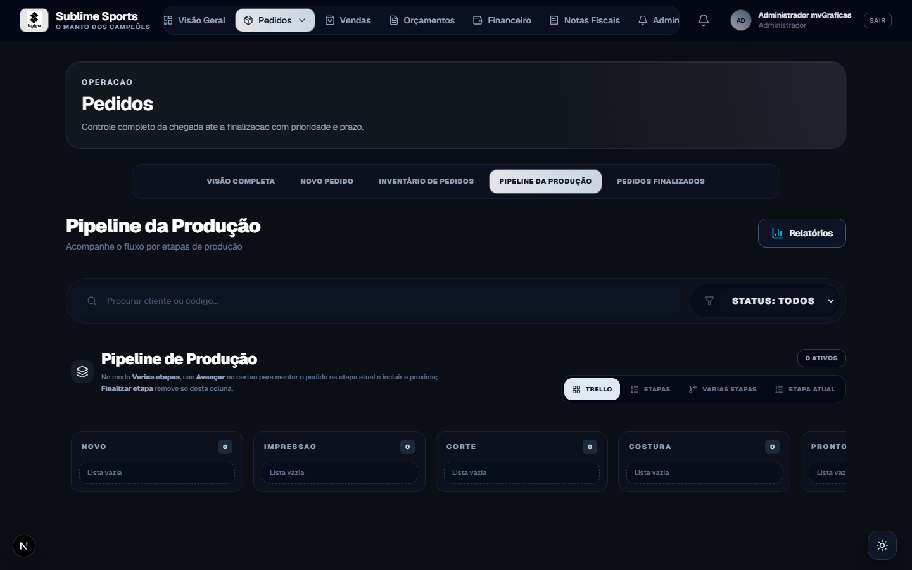
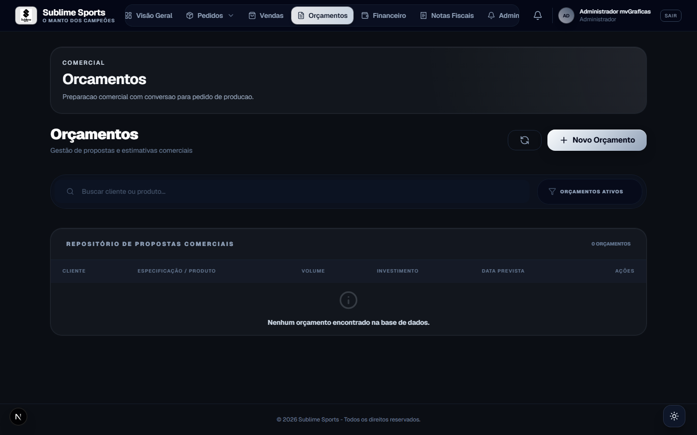

Pedidos perdidos
WhatsApp, planilhas e cadernos. Ninguém sabe em que etapa está cada pedido.
mvflow · Gestão de produção e pedidos
O mvGrafix se adapta a qualquer empresa que trabalhe com produção — gráficas, estamparias e quem gerencia pedidos. Do orçamento ao chão de fábrica, com vendas, produção, financeiro e IA integrados.
O cenário
WhatsApp, planilhas e cadernos. Ninguém sabe em que etapa está cada pedido.
Propostas sem padrão, sem PDF, sem conversão direta em pedido de produção.
Recebíveis, custos e contas fixas desconectados do que saiu da produção.
Módulos integrados
Módulos integrados para controlar orçamentos, pedidos, pipeline de produção, vendas, financeiro, IA e toda a operação de produção.
Painel executivo em tempo real com produção, orçamentos e saúde financeira.
Fluxo
Cada etapa alimenta a próxima — sem retrabalho e sem planilha paralela. A IA lê prazos, funil e financeiro no mesmo fluxo.
Chão de fábrica
Acompanhe cada pedido até a entrega em colunas visuais — etapas configuráveis para a sua operação.


Comercial
Mesma estrutura do pedido, do orçamento à produção. Exporte PDF, envie pelo WhatsApp e converta em pedido com um clique.
Alertas
Pedidos atrasados, urgentes e a vencer disparam um resumo por e-mail — só para quem tem acesso ao módulo de Pedidos. O sino do sistema avisa na hora.


Sublime IA
A IA cruza pedidos, orçamentos e financeiro num painel só. O resumo não vai por e-mail — aparece no próprio mvGrafix, com um clique.
Por que mvGrafix
Gráficas, estamparias e qualquer empresa com gestão de pedidos — com Sublime IA no painel.
Configure o pipeline no idioma da fábrica — impressão, corte ou as etapas que você usa.
Do orçamento à entrega, o pedido fica sob controle em qualquer tipo de produção.
Vendas e financeiro com papéis claros para cada área.
Pedido finalizado gera recebível e entrada no caixa.
Orçamentos, vendas, PDF, WhatsApp e conversão em pedido.
Pedidos, pipeline Kanban e folha de produção.
Caixa, contas, patrimônio e consolidação conectada aos pedidos.
Leitura de pedidos, orçamentos e financeiro no próprio sistema.
mvflow
Automatize orçamentos, produção, vendas, IA, alertas e gestão completa com o ecossistema mvGrafix.
Solicitar demonstração